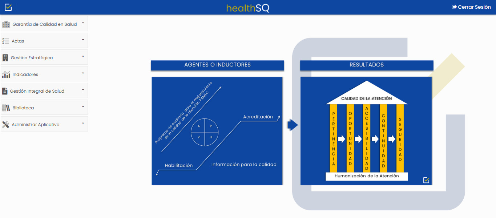
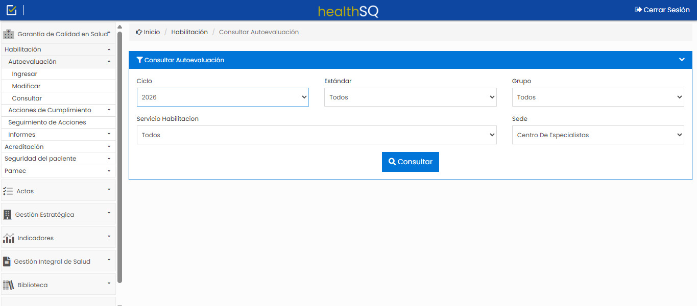
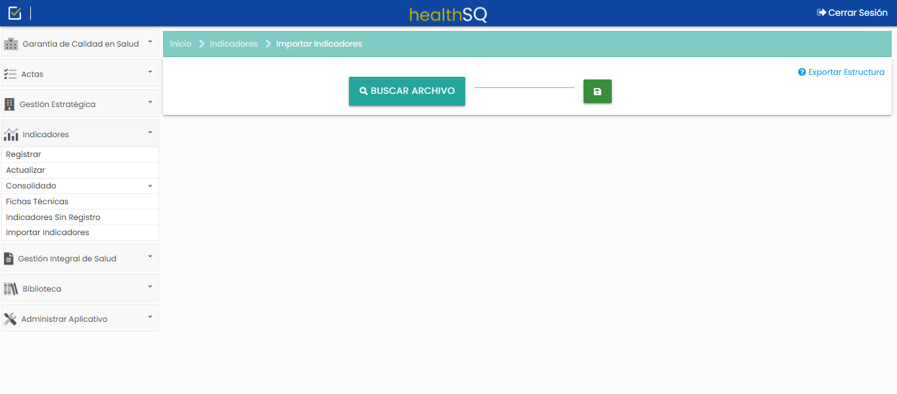

El Sistema Obligatorio de Garantía de Calidad, bajo control
Una solución tecnológica completa que permite la administración, el seguimiento y el control integral de los Sistemas Obligatorios de Calidad en salud.

Calidad asistencial con evidencia y trazabilidad
Health SQ integra la información del sistema obligatorio de garantía de calidad y facilita la mejora continua con énfasis en la acreditación.
Control a los estándares de habilitación con semaforización de tiempos.
Gestión de eventos adversos, barreras y fallas latentes.
Recopila la evidencia y optimiza los procesos de mejoramiento.
Así se ve Health SQ por dentro
Recorre las pantallas reales de la plataforma: elige una opción y mira cómo funciona.


Explora los módulos de Health SQ
Un menú lateral reúne todo el sistema de garantía de la calidad. Elige un módulo y mira sus opciones reales.
Habilitación
- Autoevaluación: ingresar, modificar y consultar
- Acciones de cumplimiento
- Seguimiento de acciones
- Informes
Acreditación
- Autoevaluación
- Informes
Seguridad del paciente
- Reportar caso
- Analizar
- Relacionar análisis de sucesos
- Seguimiento de oportunidades
- Informes
- Des/Habilitar
Indicadores
- Registrar
- Actualizar
- Consolidado
- Fichas técnicas
- Indicadores sin registro
- Importar indicadores
Gestión estratégica
- Formulación estratégica
- Perspectiva
- Objetivos estratégicos
- Iniciativa estratégica
Actas
- Registrar
- Consultar
Gestión integral de salud
- Configurar indicadores
- Acta de cierre
- Resultado
- Informe
Biblioteca
- Habilitación
- Acreditación
- PAMEC
- Indicadores
- Seguridad del paciente
- SOGCS
- Manual del usuario
Administrar aplicativo
- Usuarios
- Ciclo
- Categoría funcional
- Seguridad del paciente
- Pamec
- Actas
- Indicadores
- Parametrización GCS
- Visor de eventos
- Registro de peticiones
- Acerca de
Soporte para Health SQ
Registra tus solicitudes en The Bug Genie, el ticket electrónico de SIO. Te atendemos de 8:00 a. m. a 12:00 m. y de 2:00 a 5:30 p. m.


Lleva la calidad de tu institución al siguiente nivel
Agenda una demostración de Health SQ con un asesor de SIO.